철도신호기사 (2015-09-19 기출문제)
1과목: 전자공학
1. 반송파 전력이 20[kW]일 때 변조율 70[%]로 진폭 변조하였다면 상측파 전력[kW]은?
- 25
- 10.5
- 4.9
- 2.45
(정답률: 70%)

2. 논리식
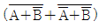
을 간단히 하면?- A
- B
- AB
- A+B
(정답률: 92%)
3. 진폭변조(AM)방식에서 변조된 높은 주파수의 파형인 피변조파의 표현으로 옳은 것은? (단, VC는 반송파의 진폭, m(t)는 변조도, ωs는 변조 신호 각주파수, ωc는 반송파 각주파수이다.)
- øAM=VCcos(ωst)cos(ωct)
- øAM=VC[1+m(t)cos(ωst)]cos(ωct)
- øAM=VC[1+m(t)cos(ωst)]
- øAM=VC[1+m(t)cos(ωct)]cos(ωct)
(정답률: 91%)
4. 5MHz의 하한 임계주파수와 15MHz의 상한 임계주파수를 가지는 교류증폭기의 대역폭(MHz)은?
- 5
- 10
- 15
- 20
(정답률: 85%)
5. e(t)=Esin(2πft+θ)에서 f를 변화시키는 변조방식은?
- AM
- PM
- FM
- 평형 변조
(정답률: 93%)
6. 주파수 대역폭이 B인 동조증폭기를 n단의 다단증폭기로 연결할 때 전체 주파수 대역폭 Bn은?
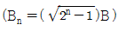
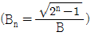
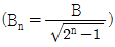
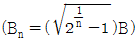
(정답률: 66%)
7. 다음 중 입력신호에 따라 잠기거나 동기화될 수 있는 회로는?
- 비안정 멀티 바이브레이터
- 단안정 멀티 바이브레이터
- 위상 검출기
- PLL 회로
(정답률: 65%)
8. 첫째 단의 잡음지수 F1=10, 이득 G1=20이며, 다음 단의 잡음 지수 F2=21, 이득 G2=50일 때 단 증폭기의 종합 잡음지수는?
- 10
- 11
- 21
- 110
(정답률: 82%)
9. 연산증폭기 동작 중 부궤환(N.F.B) 상태에 대한 설명으로 거리가 먼 것은?
- 입력임피던스가 높아진다.
- 전압이득이 높아진다.
- 출력임피던스가 낮아진다.
- 대역폭이 넓어진다.
(정답률: 89%)
10. 8진 PSK의 오류확률은 2진 PSK 오류 확률의 몇 배인가?
- 2배
- 3배
- 4배
- 5배
(정답률: 75%)
11. 어떤 회로를 오실로스코프로 관측된 펄스 파형의 펄스폭이 0.3μs이고, 주기가 1.5μs이면 듀티 싸이클(duty cycle)은?
- 5
- 1.8
- 0.45
- 0.2
(정답률: 78%)
12. 정전압회로에 주로 사용되는 다이오드는?
- 제너 다이오드
- 에사키 다이오드
- 터널 다이오드
- 바렉터 다이오드
(정답률: 72%)
13. 그림과 같은 연산증폭기의 출력전압은?
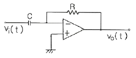
- 출력전압은 압력전압을 미분한 형태로서, 위상이 반전된다
- 출력전압은 입력전압을 미분한 형태로서, 위상이 같다.
- 출력전압은 입력전압을 적분한 형태로서, 위상이 반전된다.
- 출력전압은 입력전압을 적분한 형태로서, 위상이 같다.
(정답률: 84%)
14. 16진 PSK 변조방식을 사용하고, 채널의 대역폭이 4kHz일 때 채널 용량(bps)는?
- 16000
- 32000
- 48000
- 56000
(정답률: 74%)
15. 전가산기(full adder)에 대한 설명으로 옳은 것은?
- 자리올림을 무시하고 일반 계산과 같이 덧셈하는 회로이다.
- 아랫자리의 carry를 더하여 짝수의 덧셈을 행하는 회로이다.
- 아랫자리의 carry를 더하여 홀수의 덧셈을 행하는 회로이다.
- 아랫자리의 자리올림을 더하여 2진수의 덧셈을 완전히 행하는 회로이다.
(정답률: 79%)
16. FM파의 순시 주파수는 변조신호 f(t)와 어떤 관계를 갖고 있는가?
- 변조신호 f(t)에 비례한다.
- 변조신호 f(t)의 제곱에 비례한다.
- 변조신호 f(t)의 미분값에 비례한다.
- 변조신호 f(t)의 적분값에 비례한다.
(정답률: 71%)
17. RS-FF에서 2개의 입력 R, S가 동시에 1인 경우에도 불확정한 출력 상태가 되지 않도록 하기 위하여 인버터(inverter) 하나를 RS-FF의 입력 양단에 부가한 회로는?
- D-FF
- JK-FF
- master-slave JK-FF
- T-FF
(정답률: 55%)
18. 다음 그림과 같은 회로의 논리식은?
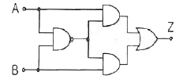
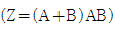
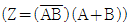
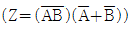
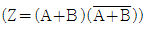
(정답률: 79%)
19. 변조 신호가 f(t)=10cos(2π103t)일 때 FM의 변조지수는? (단, 주파수 감도 계수는 Kf=100Hz/V이다.)
- 1
- 10
- 100
- 1000
(정답률: 53%)
20. 다음의 회로에서 출력전압 VO(V)는? (단, R1=R3=1kΩ, R2=R4=5kΩ, V1=4V, V2=3V 이다.)
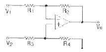
- 1
- -1
- -5
- -7
(정답률: 81%)
2과목: 회로이론 및 제어공학
21. 송전선로에서 전압이 3×108m/s인 광속으로 전파할 때 200MHz인 주파수에 대한 위상정수는 몇 rad/m 인가?
- 4/3π
- 2/3π
- π/3
- π
(정답률: 72%)
22. 내부 임피던스가 0.3+j2(Ω)인 발전기에 임피던스가 1.7+j3(Ω)인 선로를 연결하여 전력을 공급한다. 부하 임피던스가 몇 Ω 일 때 부하에 최대전력이 전달되는가?
- 1.4-j
- 1.4+j
- 2-j5
- 2+j5
(정답률: 60%)
23. DC 12V의 전압을 측정하기 위하여 10V용 전압계 두 개를 직렬로 연결하였을 때 전압계 V1의 지시값은 몇 V인가? (단, 전압계 V1의 내부저항은 8kΩ, V2의 내부저항은 4kΩ이다)
- 4
- 6
- 8
- 10
(정답률: 67%)
24. 어떤 콘덴서를 300V로 충전하는데 9J의 에너지가 필요하였다. 이 콘덴서의 정전용량은 몇 ㎌인가?
- 100
- 200
- 300
- 400
(정답률: 67%)
25.
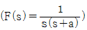
의 라플라스 역변환은?- e-at
- 1-e-at
- a(1-e-at)
- 1/a(1-e-at)
(정답률: 70%)
26. t=0에서 스위치 K를 닫았다. 이 회로의 완전응답 i(t)는? (단, 커페시턴스 C는 그림의 극성으로 V/2의 초기진압을 갖고 있었다.)
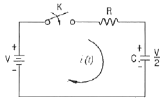
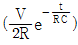
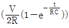
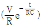
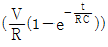
(정답률: 58%)
27. 저항 R=50Ω과 용량 리액턴스 1/ωC=50Ω인 콘덴서가 직렬로 연결된 회로에 100V의 교류전압을 인가할 때, 이 회로의 임피던스 Z(Ω)와 전압, 전류의 위상차 θ는?
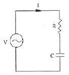
- Z=50√2, θ=45°
- Z=50√3, θ=45°
- Z=50√2, θ=60°
- Z=50√3, θ=60°
(정답률: 52%)
28. 3상 회로에서 단상 전력계 2개로 전력을 측정하였더니 각 전력계의 값이 각각 301W 및 1327W 이었다. 이때의 역률은 약 얼마인가?
- 0.34
- 0.62
- 0.68
- 0.75
(정답률: 60%)
29. 회로망의 전달함수
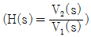
를 구하면?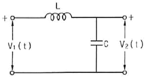
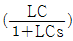
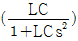
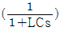
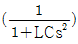
(정답률: 64%)
30. 그림과 같은 2단자 회로의 구동점 임피던스가 순저항 회로가 되기 위한 Z1, Z2 및 R의 관계식으로 옳은 것은?
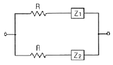
- Z1Z2=R
- Z1Z2=R2
- Z2/Z1=R
- Z2/Z1=R2
(정답률: 53%)
31. 논리식
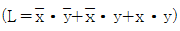
를 간략화한 것은?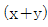
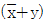
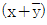
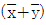
(정답률: 75%)
32. 단위 임펄스함수 δ(t)를 z변환하면?
- 1
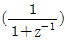
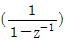
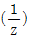
(정답률: 64%)
33. 단위 부궤환 시스템이
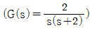
와 같을 때, 다음 중 옳은 것은?- 무제동
- 임계제동
- 과제동
- 부족제동
(정답률: 62%)
34. 특성방정식 s3+Ks2+2s+K+1=0 으로 주어진 제어계가 안정하기 위한 K 범위는?
- K＞0
- K＞1
- -1＜K＜1
- k＞-1
(정답률: 62%)
35. 상태방정식
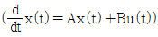
에서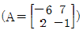
이라면 A의 고유값은?- 1, -8
- 1, -5
- 2, -8
- 2, -5
(정답률: 64%)
36. 대역폭(Band Width)은 과도응답 성질의 한 척도로 사용되는데 이의 특성으로 알맞은 것은?
- 대역폭이 적으면 비교적 높은 주파수만이 통과한다.
- 대역폭이 크면 시간응답은 일반적으로 늦고 완만하다.
- 대역폭이 적으면 시간응답은 일반적으로 늦고 완만하다.
- 대역폭이 크면 비교적 낮은 주파수만이 통과한다.
(정답률: 48%)
37. 다음 회로에서 출력 전압 V0는? (단, V1, V2, V3는 입력 신호전압이다.)
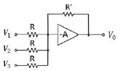
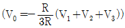
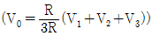
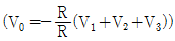
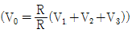
(정답률: 48%)
38.
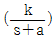
인 전달함수를 신호 흐름선도로 표시하면?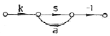
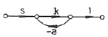
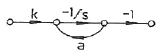
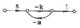
(정답률: 75%)
39. 전달함수 G(jw)=j5w이고, w=0.02일 때 이득(dB)는?
- 20
- 10
- -20
- -10
(정답률: 69%)
40. 시퀀스제어에 관한 설명으로 틀린 것은?
- 시스템이 저가이고 간단하다.
- 제어동작이 출력과 관계없어 오차가 많이 나올수 있다.
- 입력과 출력간의 오차를 시스템 내부에서 스스로 조절할 수 있다.
- 미리 정해진 순서에 따라 제어가 순차적으로 진행된다.
(정답률: 20%)
3과목: 신호기기
41. 120V, 전기차 전류 100A, 전기자 저항 0.2Ω인 분권전동기의 발생 동력은 몇 kW인가?
- 8
- 9
- 10
- 12
(정답률: 62%)
42. 4극 60Hz 의 3상 권선형 유도전동기의 전부하 슬립이 4%일 때 전부하 토크로 1200rpm의 회전을 유지하려면 2차 회로에 약 몇 Ω의 저항을 삽입하여야 하는가? (단, 2차 권선은 Y접속이고 각 상의 저항은 0.4Ω이다.)
- 2.9
- 2.2
- 1.8
- 1.5
(정답률: 53%)
43. 전동차단기에서 전동기의 슬립전류는 몇 A 이하로 하여야 하는가?
- 0.4
- 3.6
- 4.2
- 5.0
(정답률: 92%)
44. 변압기의 1차, 2차의 전압, 전류를 V1, V2, I1, I2라고 하면 그 관계는 어떻게 되는가?
- V1I1=V2I2
- V1I1＜V2I2
- V1I1≤V2I2
- V1I1＞V2I2
(정답률: 60%)
45. 다음은 결선도용 계전기의 그림기호이다. 명칭은?
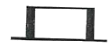
- 단속 계전기
- 완동 계전기
- 유극 계전기
- 완방 계전기
(정답률: 83%)
46. NS형 전기선로전환기 기계적 동작부에서 일정주기로 조정해야 하는 부분은?
- 감속기어장치
- 전환장치
- 쇄정장치
- 마찰클러치
(정답률: 91%)
47. 중성점이 있는 같은 변압기 2대를 사용하여 T결선으로 3상 변압을 하려 한다. 이때의 변압기 이용률은?
- 47.6%
- 57.8%
- 66.6%
- 86.6%
(정답률: 75%)
48. 다이오드를 사용한 정류 회로에서 여러 개를 직렬로 연결하여 사용할 경우 얻을 수 있는 효과는?
- 다이오드를 과전압으로부터 보호
- 다이오드를 과전류로부터 보호
- 부하출력의 맥동률 감소
- 전력공급의 증대
(정답률: 71%)
49. 신호용 계전기의 성능에 관한 설명 중 부동작 전류란 다음 중 어느 것인가?
- 계전기가 안전하게 동작할 수 있는 최소한의 전류
- 여자 접점은 구성되지 않고 낙하 접점은 개방되지 않도록 하는 최대한의 전류
- 철심이 포화된 상태의 전류로 낙하전류를 측정하기 위하여 사용되는 기준전류
- 포화 전류로 잠시 여자했다가 서서히 감소시킬 때 다시 강상 접점이 개방되려고 할 때의 전류
(정답률: 75%)
50. 4극 50Hz, 20kW 인 3상 유도전동기가 있다. 전부하시의 회전수가 1450rpm이라면 발생 토크는 약 몇 kg·m인가?
- 49.87
- 47.83
- 13.45
- 11.87
(정답률: 66%)
51. 1차 전압 6600V, 권수비 30인 단상변압기로 전등 부하에 20A를 공급할 때의 입력은 몇 kW인가? (단, 변압기의 손실은 무시한다.)
- 4.4
- 5.5
- 6.6
- 7.7
(정답률: 74%)
52. NS형 전기 선로전환기에 사용되는 전동기의 종류로 옳은 것은?
- 2상 2극 콘덴서 기동형 단상 유도전동기
- 2상 4극 콘덴서 기동형 단상 유도전동기
- 3상 4극 농형 유도전동기
- 3상 8극 농형 유도전동기
(정답률: 77%)
53. 그림과 같은 단상 반파제어정류회로에 사용된 다이오드에 D2에 관한 설명으로 적합한 것은?
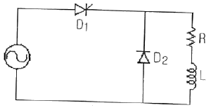
- 순저항 부하에서도 사용된다.
- 부하 전류의 평활화에 사용된다.
- D2에 의해 회로의 역률이 저하된다.
- D2에 인가되는 역바이어스 전압은 일정하지 않다
(정답률: 73%)
54. 전기기계에서 히스테리시스손을 감소시키기 위한 방법으로 가장 적합한 것은?
- 보극설치
- 성층철심
- 규소강판 사용
- 보상권선 설치
(정답률: 91%)
55. 직류 분권전동기의 전압이 일정할 때 부하 토크가 2배이면 부하전류는?
- √2배로 증가한다.
- 2배로 증가한다.
- 1/2로 감소한다.
- 1/4로 감소한다.
(정답률: 66%)
56. 8극 60Hz, 400kW, 유도전동기가 있다. 전부하시의 슬립이 2.5%일 때 회전수는 약 몇 rpm인가?
- 978
- 878
- 778
- 678
(정답률: 88%)
57. 기동 및 정지가 빈번하고 토크의 변동이 심한 부하의 전동기로 가장 적합한 것은?
- 직권전동기
- 분권전동기
- 가동복권전동기
- 차동복권전동기
(정답률: 92%)
58. 다음 중 건널목 경보 장치에 건널목 제어기를 사용하는 이유가 아닌 것은?
- 건널목이 중첩된 곳
- 건널목 제어장이 서로 다를 때
- 신호케이블의 소요가 적을 때
- 전철구간 등 별도 궤도회로 구성이 곤란한 곳
(정답률: 96%)
59. 전기 선로전환기 운전 중에 콘덴서 회로가 단선될 경우 전동기의 동작 상태는?
- 계속 회전한다.
- 회전 방향이 달라진다.
- 정지 후 다시 동작한다.
- 선로전환기 동작이 정지된다.
(정답률: 92%)
60. 정격전압에서 전동차단기(일반형) 차단봉의 하강시간과 상승시간에 대한 기준으로 옳은 것은?(관련 규정 개정전 문제로 여기서는 기존 정답인 2번을 누르면 정답 처리됩니다. 자세한 내용은 해설을 참고하세요.)
- 하강시간 6±2초, 상승시간 10초 이하
- 하강시간 8±2초, 상승시간 12초 이하
- 하강시간 10±2초, 상승시간 14초 이하
- 하강시간 12±2초, 상승시간 16초 이하
(정답률: 83%)
4과목: 신호공학
61. 경부고속선에 운용중인 UM71C형 궤도회로에 전기적 절연을 위해 사용되는 주파수가 아닌 것은?
- 2040[Hz]
- 2400[Hz]
- 2570[Hz]
- 3120[Hz]
(정답률: 77%)
62. 경부고속선(KTX) 전자연동장치의 구성 기기로 옳지 않은 것은?
- 미니현장조작판(LMP)
- 연속정보전송모듈(CEU)
- 선로변기능모듈(TFM)
- 컴퓨터지원 유지보수시스템(CAMS)
(정답률: 53%)
63. 복선구간에 사용하는 대용폐색 방식은?
- 연동폐색식
- 자동폐색식
- 지도식
- 통신식
(정답률: 77%)
64. 경부고속철도 열차자동제어장치(ATC)에서 루프코일을 통하여 차상장치로의 정보전송 내용이 아닌 것은?
- ATC구간으로의 진, 출입 정보
- 절대정지구간 제어정보
- 건넘선용 궤도회로 주파수채널 변경정보
- 폐색구간의 길이
(정답률: 79%)
65. MJ81형 전기선로전환기의 전환시간으로 옳은 것은?
- 3초 이하
- 5초 이하
- 7초 이하
- 9초 이하
(정답률: 79%)
66. 단선구간의 선로용량 산출 공식은? (단, N : 역사이의 선로용량(편도 1일 열차횟수), T : 역사이의 평균열차운행시간(분), C : 운전취급시분(분), f : 선로이용률(통상0.6))
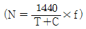
(정답률: 96%)
67. 열차자동정지장치 지상자의 설치에 대한 설명으로 틀린 것은?
- 점제어식 지상자의 설치거리는 신호기 바깥쪽으로부터 열차 제동거리의 1.2배 범위로 한다.
- 점제어식은 레일상면으로부터 지상자 상면까지의 높이를 20~40mm 의 범위로 한다.
- 가드레일과의 간격은 400mm 이상으로 한다.
- 레일 하부로 지나가는 리드선은 보호관을 설치한다.
(정답률: 65%)
68. 경부고속철도 열차제어정보를 궤도회로를 통하여 차상으로 전달하는 연속정보내용으로 거리가 먼 것은?
- 폐색구간의 길이
- 열차제동곡선 생성에 필요한 속도정보
- 폐색의 구배정보
- 전차선 사구간 위치정보
(정답률: 83%)
69. 신호용 계전기 중 여자 전류가 끊어진 후 얼마간 시간이 경과된 후부터 N접점이 낙하되는 계전기는?
- 완동계전기
- 완방계전기
- 자기유지계전기
- 선조계전기
(정답률: 74%)
70. 차상 선로전환기가 배향측으로 개통되어 있을 때 표시등의 상태는?
- 적색등 점등
- 청색등 점등
- 적색등 점멸
- 등황색등 점등
(정답률: 88%)
71. 궤도회로 연장 100[m] 구간에 레일간 전압 5[V], 누설 전류 0.1[A]인 궤도회로의 누설컨덕턴스는 몇[S/km] 인가?
- 0.1
- 0.2
- 0.3
- 0.4
(정답률: 78%)
72. UM71C형 궤도회로의 보상콘덴서 설치에 대한 설명으로 거리가 먼 것은?
- 분기부를 제외하고는 볼트 취부식으로 한다.
- 보상콘덴서의 용량은 25㎌으로 한다.
- 콘덴서를 제 위치에 설치할 수 없을 때는 ±7m의 허용범위 안에 설치할 수 있으며, 그 다음 콘덴서는 제 위치에 설치한다.
- 콘덴서는 분기의 첨단 끝에서 5m 이내에 설치할 수 없다.
(정답률: 73%)
73. 경부고속철도에서 사용 중인 TVM430의 불연속 정보전송내용이 아닌 것은?
- 무선시스템 및 채널변경정보
- 지장물검지장치정보
- 전차선 사구간, 팬터내림정보
- 터널 진출입정보
(정답률: 60%)
74. 철도신호에서 사용하는 하드웨어 결함허용기법으로 거리가 먼 것은?
- Triple Module Redundancy
- Duplication with Comparison
- Watch-dog timer
- Check pointing
(정답률: 72%)
75. 건널목 경보제어 구간의 길이를 구하는 산출공식은? (단, L : 경보제어구간의 길이(m), T : 건널목경보시간(sec), Vmax : 열차 최고속도(km/h))
(정답률: 84%)
76. 입환신호기 설치기준으로 거리가 먼 것은?
- 동일 선로에서 2 이상의 선로로 분기하는 경우는 분기기 첨단 끝에서 입환신호기까지 5m 이상 되도록 설치한다.
- 구내 운전을 하는 구간의 시점에 설치한다.
- 입환표지 하위에 무유도 표시등을 설치하여 입환신호기로 사용한다.
- 차량기지, 지하구간에서 출발신호기와 겸용으로 설치할 수 있다.
(정답률: 60%)
77. 궤도회로에서 궤도계전기를 낙하시킬 수 있는 차륜과 레일면 사이의 접촉저항을 포함한 열차측의 전기저항의 최댓값은?
- 단락 저항
- 단락 감도
- 단락 계수
- 단락 임피던스
(정답률: 80%)
78. 정류기로부터 축전지와 부하를 병렬로 접속하여 그 회로 전압을 축전지의 전압보다 약간 높게 유지시켜 사용하는 충전 방식은?
- 부동 충전
- 균등 충전
- 초 충전
- 세류 충전
(정답률: 75%)
79. 임피던스 본드는 인접 궤도에 대하여 어떤 목적으로 설치하는가?
- 귀선 전류의 차단 및 신호 전류의 통과
- 귀선 전류의 통과 및 신호 전류의 차단
- 신호 및 귀선 전류의 통과
- 신호 및 귀선 전류의 차단
(정답률: 69%)
80. 선로전환기 정위 결정법으로 거리가 먼 것은?
- 본선과 측선의 경우 본선방향
- 본선과 안전측선의 경우 본선방향
- 탈선선로전환기는 탈선시키는 방향
- 측선과 측선의 경우 주요한 방향
(정답률: 96%)
상측파 전력 = 반송파 전력 × 변조율² / 2
= 20 × (0.7²) / 2
= 2.45
따라서, 정답은 "2.45"이다.